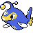

#205
Lanturn
Updated typingWaterElectric
Volt AbsorbRestores HP if hit by Electric moves.
Water AbsorbRestores HP if hit by Water moves.
HydrationHidden abilityHeals status problems in rain.
Original vs Updated
Original uses modern main-game values. Updated uses Crimson Crystal’s changes. Choose typings and base stats separately when starting a new game. Abilities, moves and evolution changes apply to both choices.
Original
WaterElectric
Updated
WaterElectric
Base stats
| Stat | Original | Updated | Change |
|---|---|---|---|
| HP | 125 | 125 | — |
| Attack | 58 | 58 | — |
| Defense | 58 | 70 | +12 |
| Sp. Atk | 76 | 96 | +20 |
| Sp. Def | 76 | 76 | — |
| Speed | 67 | 67 | — |
| Total | 460 | 492 | +32 |
Evolution
Evolves from Chinchou — Level 27
Training & breeding
- Catch rate
- 75 / 255
- Base experience
- 161
- Wild held items
- None
- Gender ratio
- 50% male, 50% female
- Egg groups
- Water 2
- Hatch time
- 20 egg cycles (~5,120 steps)
- Growth rate
- Slow
Level-up moves
LevelMoveTypeCat.PowerAcc.
TM / HM moves 19
TM / HMMoveTypeCat.PowerAcc.